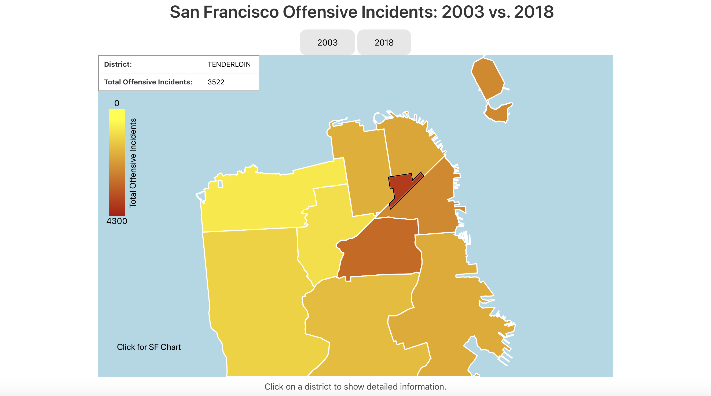

This is a data visualization project I created for the CS 360/560 at the University of San Francisco.
This visualization is created by using the D3.js JavaScript library and the San Francisco Police Reports from Data SF as the processed data.
The choropleth map shows San Francisco categorized and splitted by police districts and the colors reflect on how much total offensive incidents a district has. The two buttons, 2003 and 2018, on top of the map allows the user to update the map accordingly to the year. A bar chart below will update according to which district the user clicks on, providing detailed information on specific offensive incident types including: Assault, Drug Related, Sex Offense, and Weapon Related.